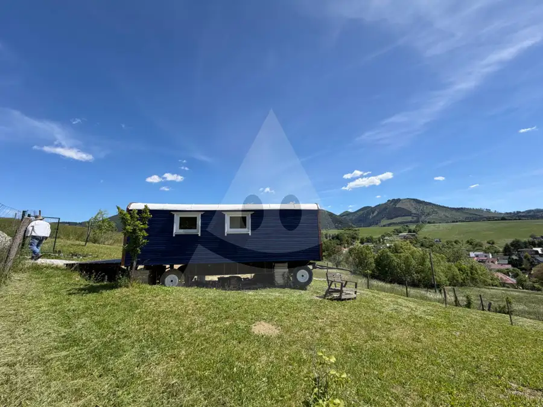
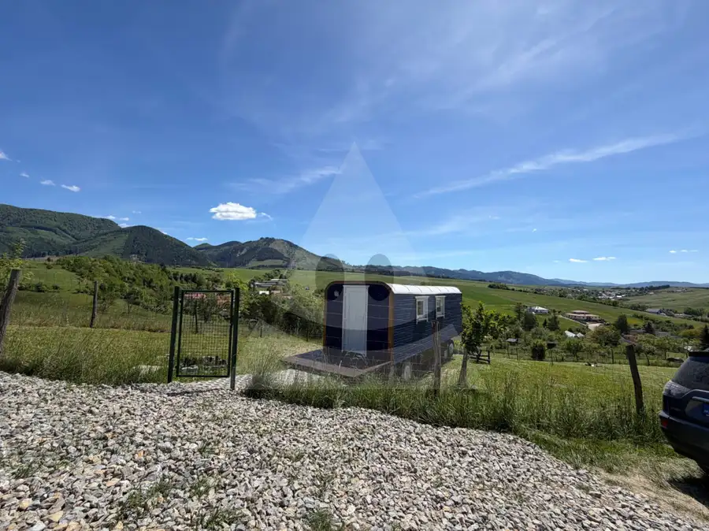
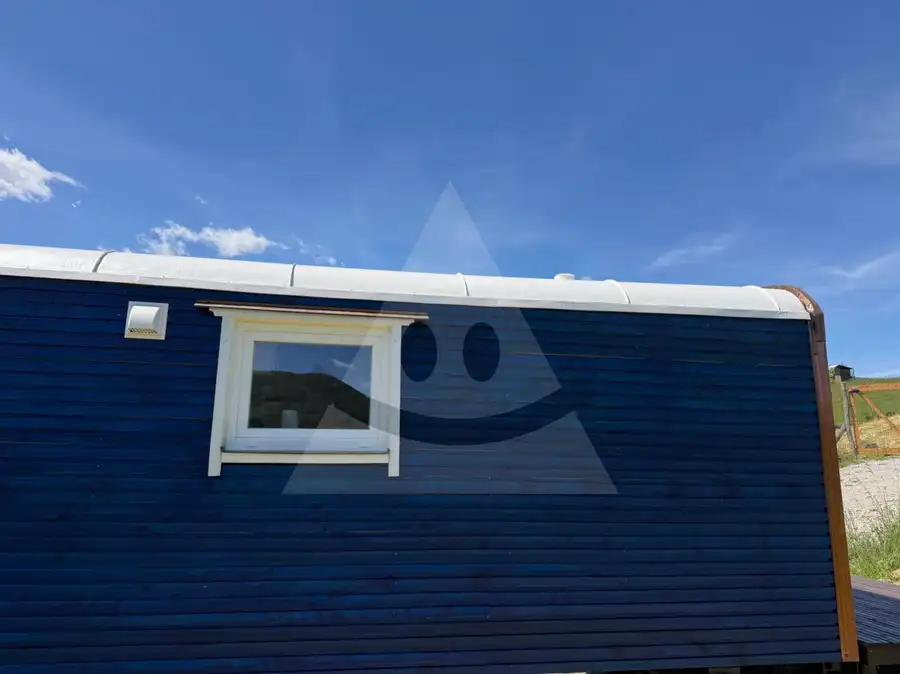
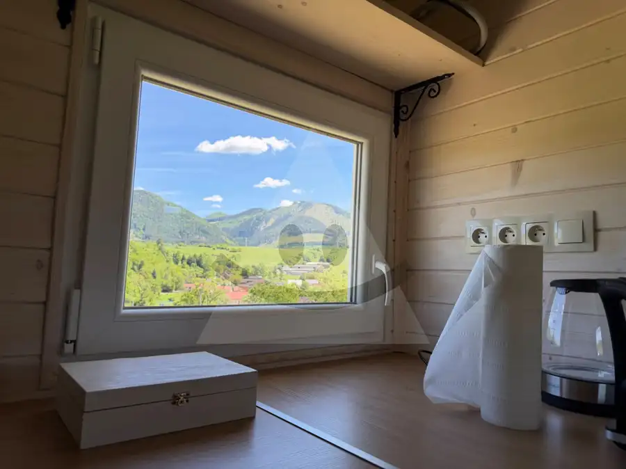
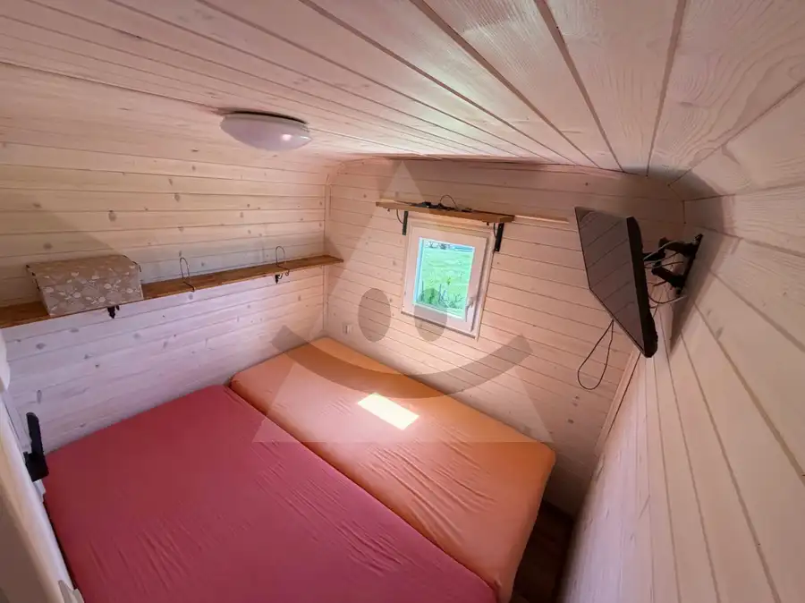

Maringotka s pozemkom na prenájom / 1096 m2 / Poluvsie - Rajecké Teplice
Rajecké Teplice






- Plocha1096 m²
- StavKompletná rekonštrukcia
- VlastníctvoOsobné
O nehnuteľnosti
Reality Alpia Vám ponúkajú na prenájom útulnú kompletne zrekonštruovanú maringotku s ohradeným pozemkom v katastri obce Poluvsie :- maringotka je po kompletnej rekonštrukcii a prenajíma sa čiastočne zariadená- dispozičné riešenie: vstup, kuchynský kút, kúpeľňa s WC, samostatná izba- cena prenájmu je 400 € vrátane energií, TV a internetu- k dispozícii od 12.01.2026- výhodou je možnosť prenájmu aj so svojimi domácimi zvieratami, ktoré budú žiť na rozľahlom pozemku, nie v maringotke.- bonusom je parkovanie priamo na ohradenom pozemku a krásne tiché prostredie s nádhernými výhľadmi na okolitú prírodu- podmienkou je záujemca, ktorý sa bude starať celoročne o priľahlý pozemok a má vzťah k tomuto spôsobu života.Pre viac informácií alebo dohodnutie obhliadky nás neváhajte kontaktovať na tel. čísle 0905 358 191 alebo na akantis.realityalpia@gmail.com
Parametre
- Druh
- Mobilný dom
- Dátum zverejnenia
- 07. 07. 2026
- Energetický certifikát budovy
- nie je
- Plocha pozemku
- 1096 m²
- Počet izieb / miestností
- 1
- Počet nadzemných podlaží
- 1
- Stav nehnuteľnosti
- Kompletná rekonštrukcia
- Telekomunikácie
- Internet
- Terén pozemku
- Mierne svahovitý
- Typ
- Prenájom
- Typ konštrukcie
- Drevená, Montovaná
- Vlastníctvo
- Osobné
- Vykurovanie
- Lokálne
- Zariadenie
- Čiastočne zariadené
- Úžitková plocha
- 1096 m²